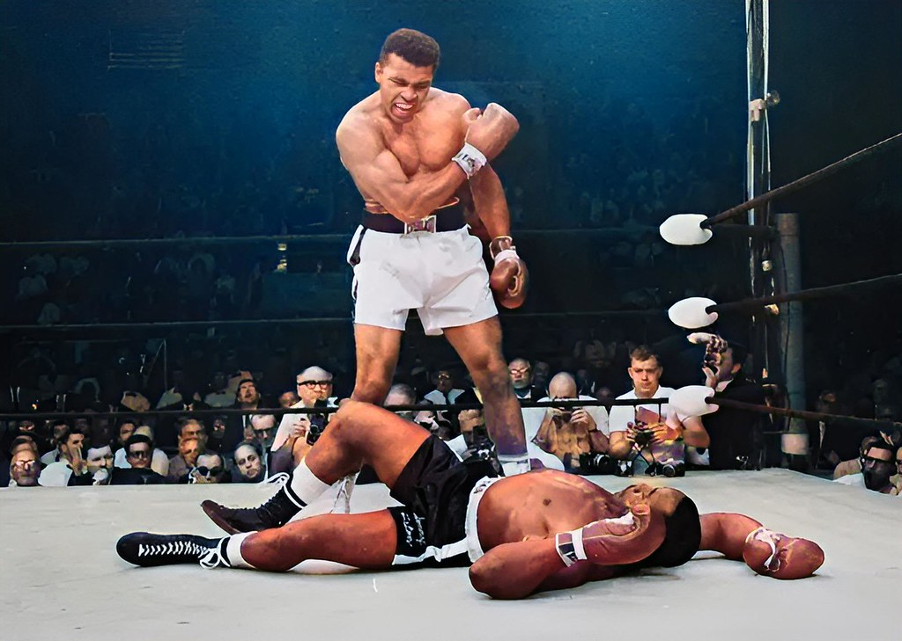

Languages
A couple years ago, when young, I strived to learn the french language. Now, I can speak 4+ languages. Besides my mother tongue language Arabic, I have learnen English, German, French and the basics in Spanish. For any communication, please contact me preferably in English.
Language proficiency:
| Languages | Proficiency |
|---|---|
| Arabic | Native |
| French | Distinguished |
| English | Superior |
| German | Advanced |
Language certificates:
Toggle me!
1. English: Internet-based Test (TOEFL iBT)
2. German: DSH-Zeugnis (C1-Level)
Sports
Very interested in sports in general, I like specially football, running and boxing. My idol in sports is Muhammad Ali, may Allah have mercy on him.
